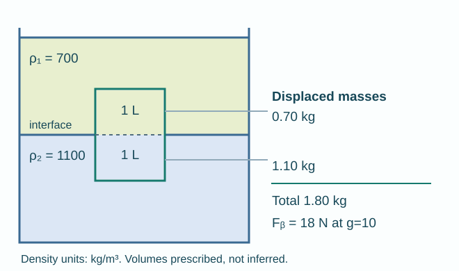

One float can displace more than one liquid
An oil–water boundary is not a solid shelf. A body that intersects the interface receives pressure from each liquid, and its support depends on how much of each fluid it replaces. The same float can occupy different configurations as its load changes.
Recall the force balance
From Archimedes’ principle, static fluid pressure supports the weight of the fluid that would occupy the body. With vertical upward positive, the forces are buoyancy, weight and any vertical support. Density is mass per volume; convert cm² to m² and cm³ to m³ before multiplying. A floating equilibrium without vertical external force has Fᵦ=mg.
Construct a displaced-mass ledger
For two immiscible liquids, divide the displaced region at the interface. Let V₁ and V₂ be the actual displaced volumes. The surrounding pressure field is continuous across a flat interface when interfacial tension is negligible. Replace each displaced region by fluid at rest: together their weight is g(ρ₁V₁+ρ₂V₂). No volume is counted twice. For a constant cross-section A, each Vᵢ=A times the length of the body's intersection with that layer. The exposed air portion contributes negligibly here.

Foundation: one prescribed partition
Two litres of submerged volume, 1 L in liquid of density 700 kg/m³ and 1 L in liquid of density 1100 kg/m³, displace 0.70 and 1.10 kg. Buoyancy is 18 N for g=10 N/kg. This is independent of object material. A freely floating object in that configuration has mass 1.80 kg.
Connected: composite body, support force
A bonded two-material object of total mass 2.5 kg displaces 0.001 m³ of upper liquid (ρ=900) and 0.002 m³ of lower liquid (ρ=1300). Displaced mass=0.9+2.6=3.5 kg; buoyancy exceeds weight by 10 N for g=10. It needs a downward tether of 10 N to stay there. Its internal material boundary need not coincide with the liquid interface.
Advanced: compare possible configurations before solving
A freely floating sealed body of volume 2 L and mass 2.1 kg is placed in two deep liquids of densities 800 and 1200 kg/m³. Even with all 2 L in the upper liquid, displaced mass is only 1.6 kg; that regime cannot support it. The denser liquid alone could displace 2.4 kg; a suitable interface partition exists if geometry permits. For a fully submerged partition, solve 2.1=800V₁+1200(0.002−V₁), giving V₁=0.00075 m³, V₂=0.00125 m³. Check both nonnegative and sum to total volume. This establishes a vertical-force equilibrium, not the stability of every orientation.
Which formula is valid?
Use the intersection lengths with each layer, not the same full height in every state. A body can be above the interface, cross the interface while partly emerged, cross the interface while fully submerged, or lie entirely in the lower liquid. For a trial position, sketch the actual boundaries and check that all lengths are nonnegative, sum to no more than the body's total height, and agree with the free surface and interface. Evaluate the force balance at a transition before continuing a formula into another configuration.
Wrong model and changed assumption
An arithmetic mean of liquid densities is correct only for equal displaced volumes with complete immersion. If the upper displacement is three times the lower displacement, the mean is volume-weighted. If the body is partly emerged, total displaced liquid volume is less than body volume. If the average density exceeds even the lower fluid density, no unsupported equilibrium is possible under these assumptions. Air buoyancy, capillary force, walls or tilt constraints can change the force balance; the ideal guide supplies no vertical force.
Exit check: what if the denser layer disappears?
A body requiring 1.1 kg of displaced mass has total volume 1 L. It can be supported by an appropriate partition of 900 and 1300 kg/m³ liquids. If the lower liquid is replaced by the upper liquid, maximum displaced mass becomes 0.9 kg. It cannot float unsupported; it must sink or find another support. The decisive comparison is with the maximum available displaced mass, not whether the object was floating earlier.
Try the fresh protected challenge Historical source checkpointExposition reference: OpenStax §11.7. Multilayer construction derived from its displaced-fluid principle; no claim that the source explicitly supplies this task.